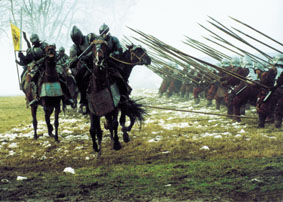

Forums galactiques > Assemblée Galactique : diplomatie officielle > Lombardie liberée
Pages : 1
| Eghinard Respect diplomatique : 111  22/09 ETU 04:32 | Score : 0 Détails L'Empereur avait dit ; plus jamais d'esclaves.
Deux mois déjà que l'armée des francs s'etait mise en branle. Deux mois presque prisonniers despaludes d'une Lombardie transformée en supermarché. La palude maudite, suffoquante de moustiques et de malaria, l'air opréssant et vicié, l'humidité accablante tuaient les hommes avant meme le combat. L'armée des francs n'etait plus qu'un campement de mourants. Comme chaque soir l'Empereur passait dans les tentes pour reconforter les soldats; Il arriva enfin au chevet d'un jeune homme de à paine 18 ans. L'Empereur se pencha sur son front brulant et caressa ses beaus cheveux blonds. Il ouvrit peniblement les yeux, il souriait : - Sire, je vais mourrir. Charlemagne continuait de caresser les cheveux du jeune ecuiyer mais son visage se fit dur, ses yeux percants, ses muscles se contracterènt. Il se pencha un peu plus vers le jeune homme : - Non tu ne mourras pas mon jeune ami, tu ne mourras pas, aussi vrai que je suis CharleMagne, roi des francs. Il sorti d'un pas assuré, menacant et majestueux à la fois, de la tente. Il s'enveloppa d'un long manteau noir, m'ordonna de l'accompagner, sauta à cheval et commenca à devorer la nuit. Avant que quiqonque n'ait pu s'apercevoir de la disparition de l'Empereur, nous chevochions sur la route de Rome. Charlemagne entra sans audience dans le bureau de Sa Sainteté : | ||
| CharleMagne Respect diplomatique : 137  22/09 ETU 04:33  | Score : 0 Détails Comment se fait il, alors que je suis le glaive de Dieu sur terre, que mes hommes meurent comme des mouches sans meme combattre ?
| ||
| Eghinard Respect diplomatique : 111 22/09 ETU 04:37 | Score : 0 Détails L'après midi meme, l'Empereur demanda au Papez de faire penitence avec lui et, cotes à cotes ilss gravirent à genoux la Scala Santa.
L'aube se levait sur les paludes de lombardie. L'aube apporte toujour espoir au coeur des hommes. Le vent soufflait frais dans les cheveux noirs de Roland.Il regardait à l'est lorsqu'il se surprit à murmurer, puis ces murmures devirent un cri, un tambour : | ||
| Roland le Furieux Respect diplomatique : 0  22/09 ETU 04:40 | Score : 0 Détails Que tous les hommes valides aident les mourants a se redresser ! En selle cavaliers, il ne sera jamais dit que l'armee des des francs meure sans combattre.
ARMEZ VOS LANCES, BRIDEZ VOS CHEVAUX, CHARGEZ, POUR L'EMPEREUR, POUR LA LOMBARDIE LIBEREE !!! | ||
| Eghinard Respect diplomatique : 111 22/09 ETU 04:45 | Score : 0 Détails Les ennemis, effrayés par les cris de Roland, tournerent le dos à l'audace et à la fureur des francs. Ils prirent la fuite, déséspérés, comme des betes traquées, offrant leurs corps aux lances meurtrieres, ils se jetaient sous les sabots des chevaux, implorant misericorde. Mais l'ire des francs était funeste, l'Empereur ne pouvait accepter telle trahison, ni de la part de Mère denis, ni de quiconque...
| ||
| Omar ben Salaad Respect diplomatique : 0  22/09 ETU 06:32 | Score : 0 Détails jolie reconstitution historique mes tres chers freres...
peut etre que mere denis voudrait nous donner sa version ? En tout cas mere denis contre Charlemagne en combat a mon avis ya pas photo ! :) |
Pages : 1
Forums galactiques > Assemblée Galactique : diplomatie officielle > Lombardie liberée